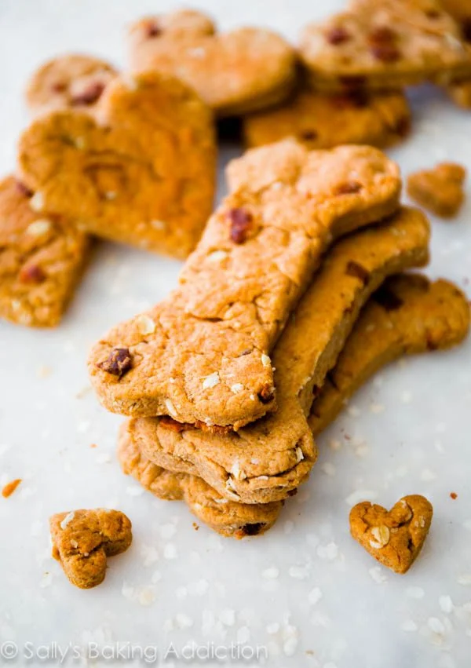

Dog Treats

Delicious baked dog treats for your pup
Ingredients
- 2 cups flour
- 800 grams of lamb liver
- 4 eggs
Steps
- Cut lamb liver into pieces
- Whisk 4 eggs
- Combine lamb liver, eggs and flour into the blender
- Blend until smooth
- Pour onto a silicon sheet and bake for 20 minutes at 180 degrees celcius